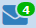

Почта в системе "Сетевой Город"
Система "Сетевой Город" имеет встроенную почтовую систему. Чтобы ей пользоваться, пользователь должен иметь право доступа Отправлять и получать почтовые сообщения. По умолчанию, такое право доступа дано всем пользователям системы вне зависимости от их роли. Встроенная почтовая система позволяет пользователям системы общаться, не выходя за ее пределы.
Просмотр списка почтовых сообщений
Чтобы войти в свой почтовый ящик, вам нужно нажать иконку в правом верхнем углу экрана системы.
Все сообщения распределены по четырем папкам: Входящие, Черновики, Отправленные и Удалённые. Переключение между папками осуществляется с помощью выпадающего списка Почтовая папка. В папке Входящие находятся сообщения, адресованные вам. Если у вас есть в ней непрочитанные сообщения, то будет отображаться картинка с количеством непрочитанных сообщений, например, так:

.
Папка Черновики содержит уже написанные, но еще не отправленные письма. Такие письма могут быть впоследствии отредактированы (если нужно) и отосланы. В папке Отправленные находятся письма, которые вы уже отправили ранее. И, наконец, в папке Удалённые содержатся письма, которые вы удалили из какой-либо из трех предыдущих папок.
Просмотр содержимого письма
Для просмотра содержимого письма нужно нажать на имя отправителя в колонке От кого.
Сообщения можно отсортировать по имени отправителя, теме письма или его дате. Для этого нужно нажать на ссылку в заголовке соответствующего столбца.
Как восстановить письмо из папки "Удалённые"?
Если письмо было удалено по ошибке, то его можно восстановить. Для этого:
1) перейдите в папку Удалённые,
2) поставьте галочку в колонке слева от имени отправителя,
3) под таблицей нажмите кнопку Переместить выделенные сообщения в папку Входящие.
Отмеченные сообщения будут перемещены в папку Входящие.